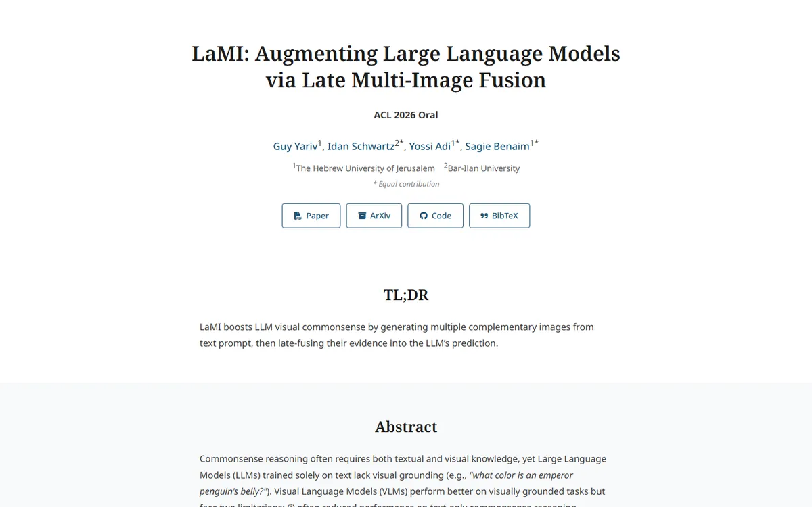

LaMI: Augmenting Large Language Models via Late Multi-Image Fusion
A careful conference handout: Noto Serif headings, navy outlined buttons and soft grey bands taking turns.

Checked against the rendered page. Title asks for weight 700 but only Noto Serif 600 is loaded, so it renders with the 600 face.
Why it is here
Restrained serif academic page with outlined buttons, alternating grey bands, a TL;DR block, a well-captioned method figure and a clean table. Simple, but done with care.
Overview
Color Palette
Typography
Noto Serif
LaMI: Augmenting Large Language Models via Late Multi-Image Fusion
Abstract · Method · Results · BibTeX — 0123456789
Noto Sans
LaMI: Augmenting Large Language Models via Late Multi-Image Fusion
Abstract · Method · Results · BibTeX — 0123456789
SFMono-Regular
LaMI: Augmenting Large Language Models via Late Multi-Image Fusion
Abstract · Method · Results · BibTeX — 0123456789
Spacing & Shape
Page Modules
Guidelines
More like this

CRAFT: Training-Free Cascaded Retrieval for Tabular QA
A tidy product manual in pale blueprint blue, where every stage wears its own colored edge.

Efficient Self-Evaluation for Diffusion Language Models via Sequence Regeneration
A tidy stack of rounded cards washed in a blue-violet-apricot dawn, signed with a gradient wordmark.

FIGMA: Towards FIne-Grained Music retrievAl
A music journal on warm paper: a heavy Newsreader headline under a red kicker, big red serif numerals for the results, and figures resting in soft cream frames.

GuideDog: A Real-World Egocentric Multimodal Dataset for Blind and Low-Vision Accessibility-Aware Guidance
A quiet monograph page: one serif column, oxblood ink for the links, and a table that blushes only at its own row.

PairCoder++: Pair Programming as a Universal Paradigm for Verified Code-Driven Multimodal and Structured-Artifact Generation
A crisp white product page: a blue announcement strip, ink-black pill buttons and every figure on a soft-shadowed card.

PROGRESSLM: Towards Progress Reasoning in Vision-Language Models
A violet-to-ember dusk poster up top, then a plain Distill reading room below.